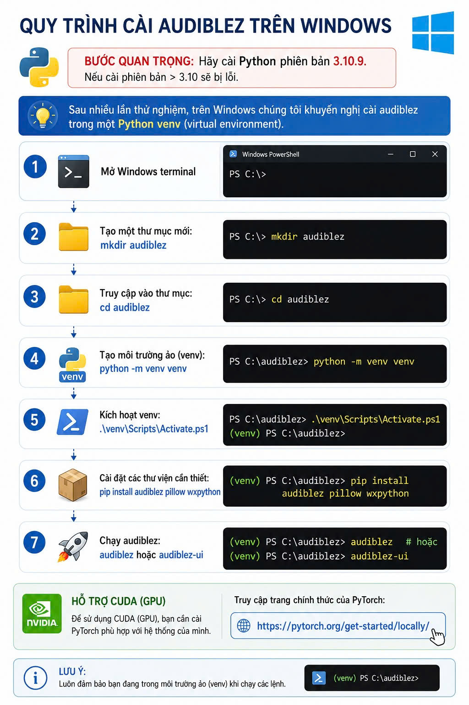

🎙️ Hướng Dẫn Cài Đặt Audiblez Dành Cho Người Mới

Audiblez là một phần mềm tuyệt vời giúp bạn chuyển đổi các file sách điện tử (e-book đuôi .epub) thành sách nói (audiobook đuôi .m4b) với giọng đọc AI cực kỳ tự nhiên. Hướng dẫn này được thiết kế theo từng bước rất chậm rãi, chỉ dành riêng cho máy tính Windows.

Phần 1: Chuẩn bị bắt buộc
Máy tính của bạn cần có một phần mềm nền tảng mang tên Python để chạy được Audiblez. Nếu máy bạn chưa có, hãy làm như sau:
- Truy cập trang web: python.org/downloads và tải bản Python mới nhất cho Windows.
- Khi mở file cài đặt vừa tải về, ĐIỀU QUAN TRỌNG NHẤT: Bạn phải tích chọn vào ô vuông "Add Python.exe to PATH" ở dưới cùng màn hình cài đặt.
- Nhấn Install Now và đợi máy tính cài xong.
Phần 2: Các bước cài đặt Audiblez
Nhấn phím Windows trên bàn phím (phím có hình 4 ô vuông), gõ chữ powershell và nhấn Enter để mở màn hình xanh dương (hoặc đen) gõ lệnh.
Hãy copy dòng lệnh dưới đây, dán vào cửa sổ Terminal và nhấn Enter:
Tiếp tục copy và dán lệnh sau, rồi nhấn Enter:
Để phần mềm hoạt động ổn định và không ảnh hưởng tới máy tính, ta tạo một không gian riêng cho nó:
Bật không gian riêng bạn vừa tạo lên bằng lệnh:
Bây giờ là bước quan trọng nhất. Chạy lệnh sau và ngồi đợi máy tính tự động tải phần mềm về (cần có kết nối mạng):
Sau khi các dòng chữ ngừng chạy, xin chúc mừng, bạn đã cài xong! Để mở giao diện trực quan dễ sử dụng, hãy gõ lệnh cuối cùng:
Bạn không cần phải cài đặt lại (bỏ qua bước 2, 4, 6). Lần sau muốn dùng phần mềm, bạn chỉ cần mở PowerShell lên và gõ lần lượt 3 lệnh:
1.
cd audiblez (vào thư mục)
2.
.\venv\Scripts\Activate.ps1 (bật môi trường)
3.
audiblez-ui (mở giao diện)